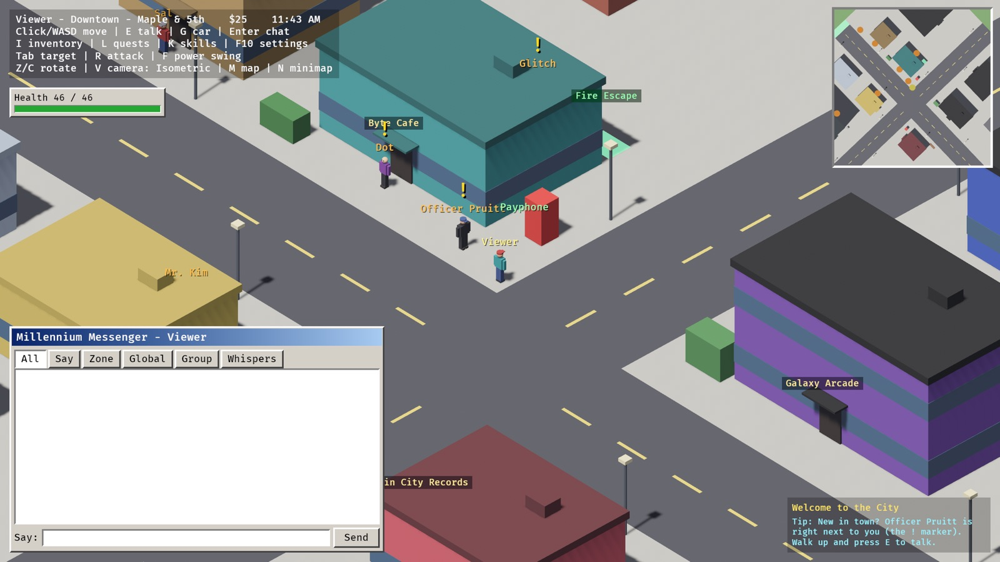
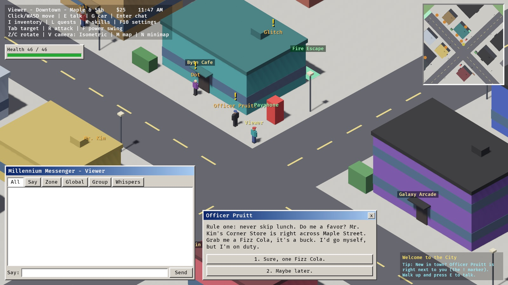
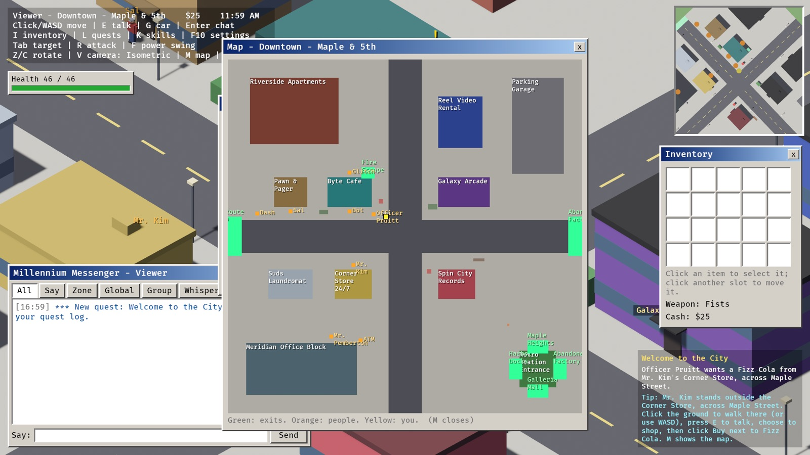
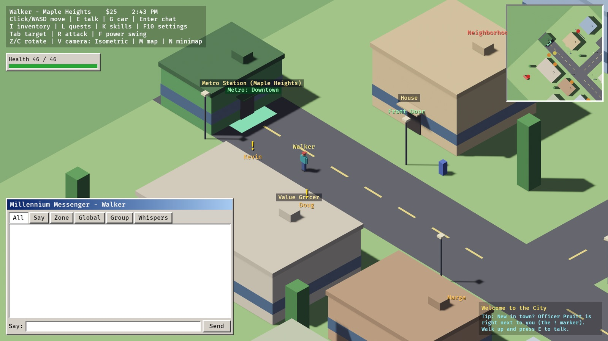
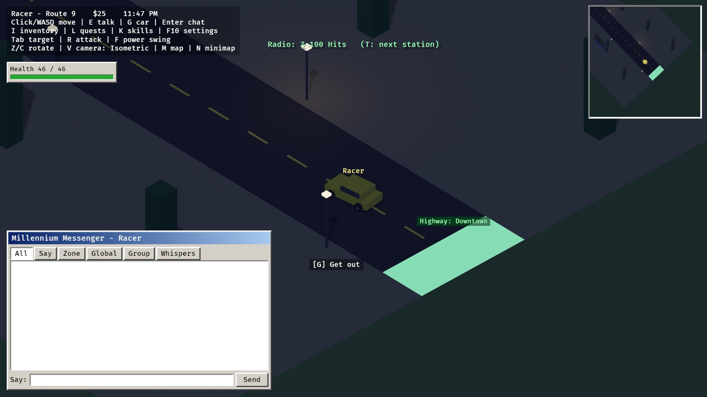
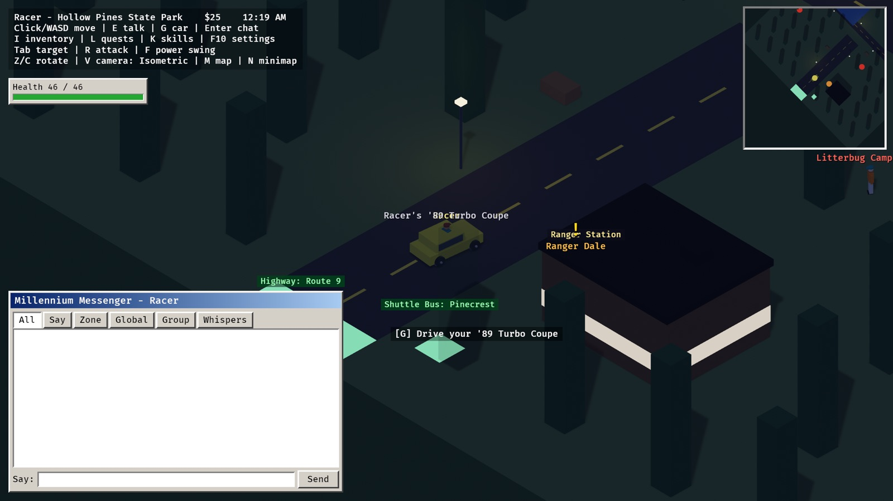
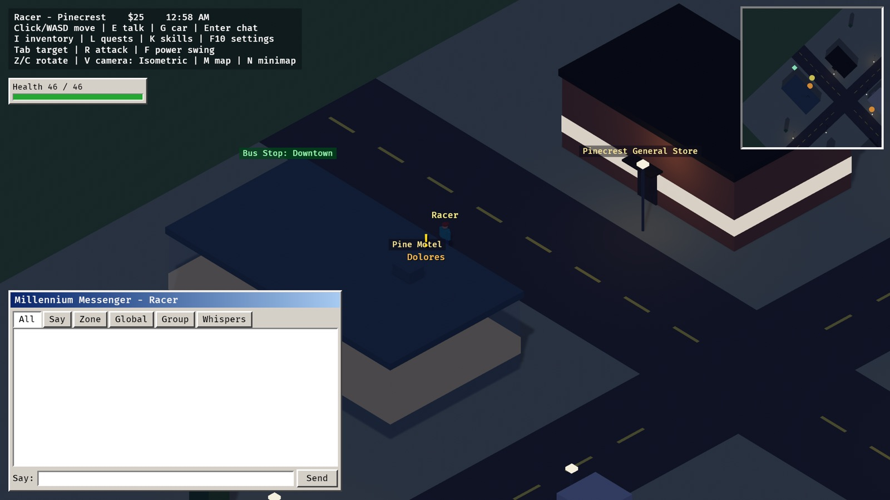
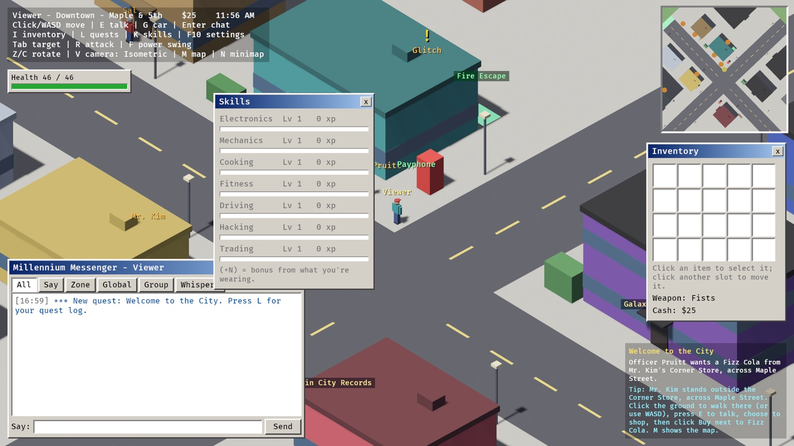
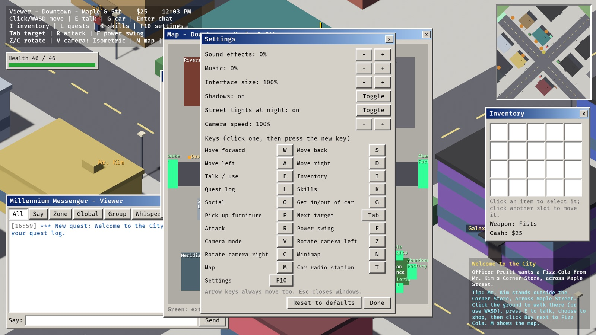

A city and a region
Downtown Maple & 5th, the Harbor Docks, the Galleria Mall, an abandoned factory, the suburbs of Maple Heights and the rooftops. Take the highway to Route 9, the town of Pinecrest and Hollow Pines State Park.
Millennium
An online RPG set around the year 2000.
Pagers, dial-up modems, internet cafés and burned CDs. A persistent city where you fix broken gadgets for cash, run errands for the locals, fight rival crews at the docks, hack payphones, drive a junker you rebuilt yourself and buy a house in the suburbs, with your friends online beside you.
Written in Rust with Bevy. Every sound and every note of music is synthesized in code. Free and open source.

Downtown Maple & 5th, the Harbor Docks, the Galleria Mall, an abandoned factory, the suburbs of Maple Heights and the rooftops. Take the highway to Route 9, the town of Pinecrest and Hollow Pines State Park.
Electronics, Mechanics, Cooking, Fitness, Driving, Hacking and Trading. Level up by doing: repair a walkman, rebuild a carburetor, flip a burger, win a fight.
Officer Pruitt shows you the ropes, then 23 quests: 56k Dreams, Rat Problem, Black ICE, a road trip to Pinecrest and more, with a quest tracker and tips.
Shops that buy only what they deal in, limited stock, prices that drop when everyone sells the same thing, and the e-Bid auction house with escrow and claims.
City Services, Meridian Corp, the Dockside Crew and the Zer0 Day hackers. Your reputation opens discounts and locked gear.
Payphones, ATMs and office terminals. Memorize the access code before it disappears; the better you are, the shorter the code.
Fix up Old Earl's junker and it's yours. Drive the highway, race Dash through Maple & 5th, and tune the car radio to Z-100 Hits or the pirate station.
Buy one of five houses in Maple Heights and furnish it. A stove, a workbench and a computer help your skills at home; a waterbed leaves you Well Rested.
Count down to 2000 with the whole city, fireworks and all. Then the millennium bug hits: fix terminals, restart the Metro, hand out cocoa and stomp the bugs before time runs out.
A 40-minute day. Streetlamps and lit windows after dark, a hot dog cart that only opens at night, and graffiti taggers who come out with it.
A dial-up handshake at login, pager beeps for chat, and a music loop for every part of town: boom-bap downtown, bossa muzak at the mall, jungle on the pirate radio.
An instant-messenger chat with Say, Zone, Global, Whisper, Party and Crew. Trades, parties, a friends list and crews with tags.
No server to rent: click Host Game and your friends join your world. Or run a dedicated server, even split over several machines.








Millennium is built from source. You need Rust (stable, 1.88 or newer). The first build takes a few minutes; after that it's quick.
git clone https://github.com/rsantacroce/millennium.git cd millennium cargo run --release -p client
Type a screen name and a password, then click Host Game. The HUD shows the address your friends type into the Server field (TCP and UDP port 5888).
docker compose up -d # Postgres (or use a SQLite file, see the manual) cargo run --release -p server cargo run --release -p client # as many as you like
Every control and how the systems work: the player manual. Running a world for others (settings, moderation, events, backups, monitoring): the admin guide.
Bevy 0.19 for the client and the headless server, one ECS codebase. The UI is bevy_ui, styled like Windows 2000.
Networking with lightyear 0.30: client prediction and rollback for walking and driving, interpolation for everyone else. The client is never trusted.
Items, NPCs, dialogue, quests, shops and recipes are RON files, checked by unit tests so a typo fails the build, not the game.
PostgreSQL or SQLite. Trades, auctions and house sales are single database transactions, so items can't be lost or duplicated.
No sound files: effects and eight music loops are synthesized at startup, from drum patterns written as strings and chords as MIDI notes.
Run all zones in one process, or one zone server per part of the world, linked by a hub that hands players over.
What's next: running it for real players (backups, CI, moderation tools), more content (a Y2K New Year's Eve event, more towns, group jobs), and an exploration of a peer-to-peer version and blockchain-backed ownership. See the roadmap.